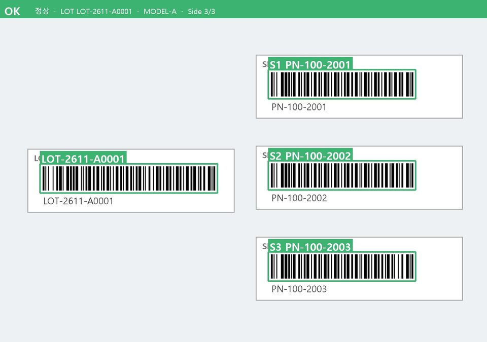
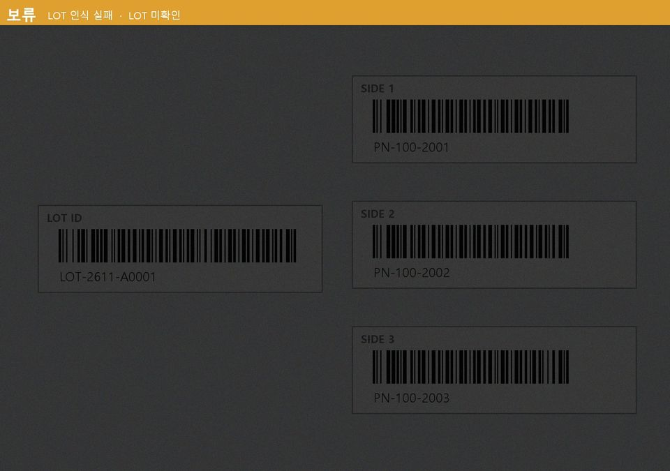
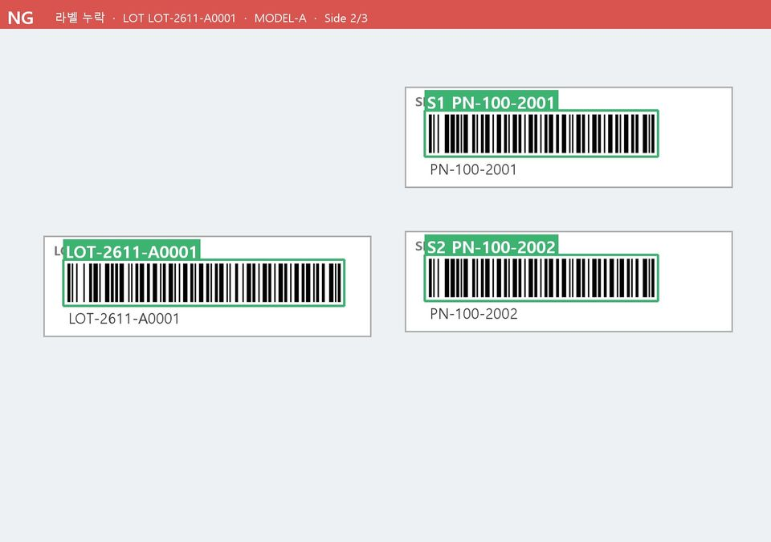

원샷 다중 인식
고정 카메라로 한 번 찍으면 여러 라벨의 위치와 종류를 동시에 찾아냅니다.
WONDER Solutions · AI 다중 라벨 인식
한 번의 촬영으로
모든 라벨을 읽고, 판정합니다
스캐너 13대가 하던 일을
카메라 3대와 AI가 대신합니다
01 · DEMO



라벨 하나를 빼거나 가려 보세요. 판정이 어떻게 달라지는지 바로 볼 수 있습니다.
사진과 결과 화면은 가상 번호로 만든 예시입니다.
02 · TECHNOLOGY
고정 카메라로 한 번 찍으면 여러 라벨의 위치와 종류를 동시에 찾아냅니다.
생산 정보 시스템(MES)의 기준 정보와 맞춰 누락과 오부착을 바로 가려냅니다.
판단이 어려운 사진은 '보류'로 알려 작업자의 확인을 돕고, 판정 근거 이미지를 남깁니다.
현장에서 쌓이는 데이터로 모델을 꾸준히 개선합니다.
실증 라인 기준 · 2026.10.06 · 경남TP 사업 성과 (검출 정확도는 mAP50)
03 · JOURNEY
다중 라벨 원샷 인식, MES 연동, 현장 화면까지 실증 라인에서 검증 중입니다.
모델을 자동으로 점검하고 다시 학습하는 운영 체계. 현장 데이터가 쌓일수록 정확도를 지키고 높입니다.
이상 징후를 먼저 알리고, 원인과 조치를 안내하는 현장 AI Agent를 개발합니다.
고객사의 시스템과 AI를 연결해 품질·생산·물류 데이터를 한 흐름으로 잇습니다.
가전 협력사에서 전자·의료기기 등 바코드 라벨 공정으로 넓혀 갑니다.